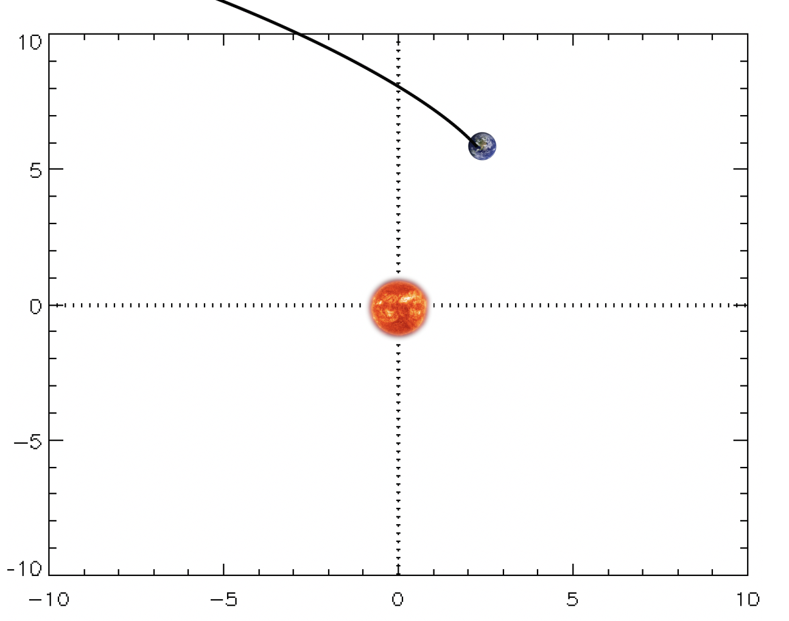

Forrige side🙂 🙁Tips til kodingFORUM
 La oss helt til slutt snakke litt om debugging. Det kommer helt sikkert til å gå galt når du programmerer banen første gang. Her ser du et veldig typisk resultat (jordkloden indikerer startposisjon).
Spørsmålet er, hva gjør du nå???
Stirrer på koden til du finner feilen Får noen andre til å stirre på koden Bruker fysikk til å finne i hvilken del av koden feilen befinner seg.